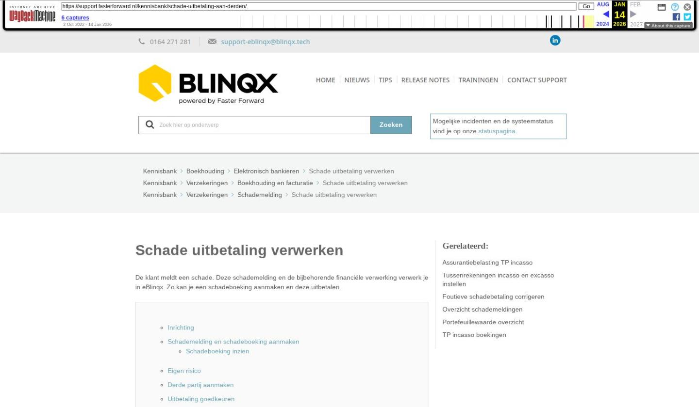

Schade uitbetaling verwerken

Tekstinhoud
Title: Schade uitbetaling verwerken | Support
URL: https://web.archive.org/web/20260114005803/https://support.fasterforward.nl/kennisbank/schade-uitbetaling-aan-derden/
Source element: <article>
---
Schade uitbetaling verwerken
De klant meldt een schade. Deze schademelding en de bijbehorende financiële verwerking verwerk je in eBlinqx. Zo kan je een schadeboeking aanmaken en deze uitbetalen.
Inrichting
Schademelding en schadeboeking aanmaken
Schadeboeking inzien
Eigen risico
Derde partij aanmaken
Uitbetaling goedkeuren
Uitbetalen
Foutieve schadeboeking corrigeren
Negatieve schadeboeking en verrekenen schade uitbetaling
Inrichting
Voor het goedkeuren van de uitbetaling is de grootboekrekening 'Uit te betalen schade' nodig. Dit is eenmalige inrichting in de administratie.
Schademelding en schadeboeking aanmaken
Je maakt een schademelding aan in het klantdossier gekoppeld aan de polis. Vanuit de schademelding kan je een schadeboeking aanmaken. Hiervoor vind je een knop 'Schadeboeking toevoegen' in het blok 'schadebedrag'.
Let op: deze knop is alleen zichtbaar bij schademeldingen die gekoppeld zijn aan een TP-incassoproduct.
Ook kan je een schadeboeking aanmaken vanuit het dossier. Hiervoor ga je naar het product – tabblad TP incasso boekingen en klik je op schadeboeking toevoegen.
Selecteer hier de schademelding die hoort bij deze boeking. Bij 'Uitbetalen aan' kan je een derde partij selecteren indien daarvan sprake is. Hieronder lees je verder hoe je een derde partij kan toevoegen.
De betreffende polis wordt gelijk ingevuld vanuit de schademelding. De omschrijving en het uit te betalen bedrag moet ingevuld worden. Deze pagina opslaan. In de boekingsregel komt er nu een kolom bij met schademelding. Deze bevat de datum van de schade en het extern schadenummer.
Schadeboeking inzien
De aangemaakte boeking kan je terug vinden in het dossier onder het tabblad TP incasso boekingen. Via het oogje kan je de boeking openen.
Via het rondje pijltje kan je een terugbetaling invoeren. Hier lees je er meer over.
Eigen risico
Wanneer je de eigen risico op wilt nemen in de schadeboeking dan kan je klikken op 'Voeg boekingsregel toe'. Deze nieuwe boekingsregel kan je als omschrijving Eigen risico geven.
Derde partij aanmaken
Indien je gebruik maakt van TP incasso dan is het mogelijk om in eBlinqx schade uit te betalen aan een derde partij bij een schademelding. Deze derde partij is eenmalige informatie in eBlinqx en hoeft daarom niet als persoon/organisatie opgevoerd te worden. Om een derde partij op te voeren ga je naar de schademelding. Daar vind je het tabblad Partijen. Klik op de button 'Betrokkenen toevoegen'. Hier vul je de naam in van de derde partij met IBAN nummer.
Uitbetaling goedkeuren
Het goedkeuren van een schade uitbetaling valt onder de groep 'Verzekeringen' en kan alleen door personen gedaan worden die in deze groep staan. Je gaat naar de module Verzekeringen – Schades – Schade uitbetalingen goedkeuren. Je kan per regel de boeking goedkeuren of een selectie maken. Goedkeuren gebeurt door het klikken op het pijlicoontje achteraan de regel. Na goedkeuren, wordt de rekening courant maatschappij geboekt en is de schadeboeking in het dossier niet meer aan te passen.
Uitbetalen
Voor het verwerken van de betaling ga je naar de module 'Incasso- en excassobestanden maken'. Onder de 'Maak excassobestand' kies je voor 'Schades'. Hier staan alle goedgekeurde schadeboekingen.
Is de schadeboeking voor de uitbetaling niet juist verwijder je hier de boeking. Na verwijderen kun je in het dossier onder de schademelding een nieuwe boeking aanmaken of de bestaande aanpassen. Automatisch wordt bij het verwijderen van de boeking de journaalpost die bij het goedkeuren gemaakt is tegengeboekt. Is de schadeboeking nog niet goedgekeurd dan kan je deze verwijderen vanuit het dossier – betreffende product – tabblad TP incasso boekingen.
Je selecteert de schadeboekingen die je wilt uitbetalen. Vervolgens kies je vanaf welke rekening deze uitbetaling plaatsvindt en klik op '1 boeking(en) uitbetalen'.
Je komt nu in het tabblad Schade uitbetalen. Hier download je het (sepa) bestand om in te lezen in je bankpakket. Eventueel kan de batch hier verwijderd worden om de posten terug open te zetten. Na het inlezen van het bankafschrift is het niet meer mogelijk om de batch te verwijderen.
Vervolgens zie je in de schademelding terug welke bedragen uitbetaald zijn aan wie.
Bij het inlezen van het bankafschrift moet na het selecteren van de grootboekrekening 'Nog uit te betalen schades'.
In het veld Bedrag klik je op F6. Hier selecteer je de batch en vervolgens kies je voor 'Gehele batch invoegen'.
Zo kan je de openstaande posten in één keer afboeken.
Schadeboekingen worden opgenomen in het rekening-courant maatschappijen overzicht en daarnaast zijn ze terug te zien in de grootboek rekening-courant maatschappijen.
Foutieve schadeboeking corrigeren
Lees hier meer over het corrigeren van een foutieve schadeboeking.
Negatieve schadeboeking en verrekenen schade uitbetaling
Hier lees je meer over het verwerken van een negatieve schadeboeking en het verrekenen van een schade uitbetaling.
Laatste update: 15 oktober 2025
Was deze informatie nuttig?
Ja Nee
[Let op: deze pagina valt in de live site onder drie categorieën tegelijk: "Boekhouding" > "Elektronisch bankieren", "Verzekeringen" > "Boekhouding en facturatie", en "Verzekeringen" > "Schademelding". In dit archief is deze opgenomen onder "Boekhouding en facturatie".]